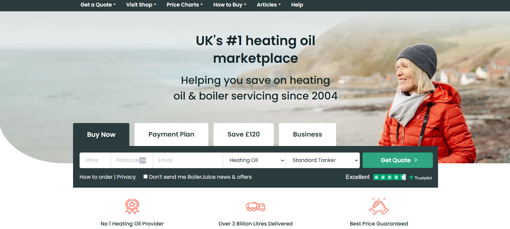

- Client:
- BoilerJuice
- Project(s):
- Innovative heating oil platform with integrated smart reading technology.
- Role:
- User interface designer, user experience designer and user researcher.
About the project(s)
Innovative heating oil platform with integrated smart reading technology.
BoilerJuice is the UK's leading heating oil supplier, providing a simple, efficient, and cost-effective way for customers to order heating oil. Established in 2004, BoilerJuice revolutionised the industry by offering a price comparison service that allows users to find the best local deals on heating oil. With its focus on customer satisfaction, BoilerJuice has built a reputation for offering competitive prices, reliable delivery, and a seamless online experience.
The company operates through an extensive network of trusted heating oil suppliers, ensuring that customers receive fast and reliable delivery, no matter where they are. In addition to offering single heating oil deliveries, BoilerJuice provides subscription services for those who prefer the convenience of automatic top-ups, saving both time and effort. Their innovative approach and dedication to customer care make BoilerJuice the go-to platform for heating oil orders across the UK.
Current homepage of BoilerJuice.
Source images: Boilerjuice Ltd.
BoilerJuice, founded in 2004, revolutionised the heating oil market by offering a comparison website that helped users save money by finding local, cheaper prices and facilitating oil deliveries. However, as demand grew, the traditional customer journey - relying on phone orders and a basic online form - became outdated and inefficient. Customers often faced delays, risking running out of heating oil, particularly in winter months, while the customer service team struggled to manage the increasing volume of orders.
Customers also had to physically check oil levels, which was inconvenient, especially during cold weather. The lack of real-time updates and limited online interaction led to frustration, service abandonment, and loss of potential customers.
Image of an elderly man waiting for a heating oil delivery generated by ChatGPT.
Image of mum with children waiting for heating oil delivery.
Source images: Arlington Research on Unsplash, Vitolda Klein on Unsplash, Kev Costello on Unsplash

Heating oil truck image generated by ChatGPT.
To address these challenges, BoilerJuice introduced an innovative new platform that connects live heating oil readings from smart tanks directly to the online system. This platform provides users with accurate, up-to-date oil levels, automatically generating the best quotes from a range of suppliers and pairing users with the most cost-effective option. Customers can now place orders online, track delivery progress in real time, and save money through smarter decision-making. By redesigning the customer experience journey and listening to user feedback, BoilerJuice significantly improved service transparency and customer satisfaction while reducing pressure on support teams. As a result, the new platform not only promotes customer loyalty but also attracts new users by offering a seamless, efficient, and user-friendly experience.
The result was a completely redesigned platform that connected live heating oil readings from smart tanks directly to the BoilerJuice website, mobile, and app. The new system sends alerts to customers when their oil levels are low, prompting them to place an order. It also allows them to get more precise quotes and purchase heating oil directly online, or even subscribe to an automatic refill service. This solution was convenient, accessible, and offered competitive prices, ensuring customer trust and making the process more transparent.
Through this comprehensive approach, BoilerJuice successfully created a new platform that not only solved critical customer pain points but also improved the overall experience by providing a seamless, efficient, and user-friendly service.
BoilerJuice website, mobile app and smart wireless oil level monitor.
Source images: Boilerjuice Ltd.
To address these issues, we took a Design Thinking approach to redesign the entire customer experience. We started by researching pain points, analysing opportunities on the web platform, and examining both front-stage and back-stage services. This research involved collaborating with users (both new and returning), heating oil suppliers, engineers, customer service teams, web developers, and data analysts. Our goal was to create a personalised, seamless journey for customers and improve the mobile experience.

Examples of service design, user research, user experience, and user interface design processes.
We utilised tools such as Google Analytics, Google Optimize for A/B testing, and Lucky Orange to gain emotional insights. For journey mapping, we used Sketch and Smaply, among others. Jira was used for project tracking and collaboration, especially as we worked with a large team of specialists. Throughout the project, we produced various deliverables, including ecosystem maps, persona profiles, user journeys, emotion maps, wireframes, and prototypes, all of which were tested regularly. We conducted interviews, workshops, and continuous meetings with the client to present discovery outcomes, advise on solutions, and outline next steps.

Personas created with Smaply.
Source images: Boilerjuice Ltd.
Basic user flow journey.
Source images: Boilerjuice Ltd.

Google Analytics Goal Funnel / Funnel Visualisation of the BoilerJuice website journey.
Source images: Boilerjuice Ltd.

BoilerJuice homepage wireframe designed using Axure RP.
Source images: Boilerjuice Ltd.
Read more case studies